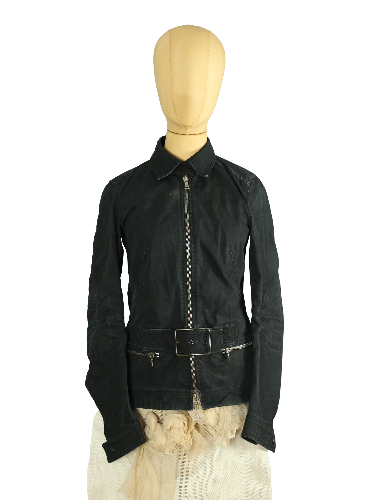

Prada
250.00 €
Aus dem kuratierten Archiv von Disorder119. Diese Prada Jacke präsentiert sich in einer klaren, funktionalen Silhouette mit leicht tailliertem Schnitt. Gefertigt aus schwarzem Baumwollgewebe mit matter Oberfläche, wirkt das Material robust und zugleich flexibel. Der durchgehende Frontreißverschluss mit Riri-Hardware wird durch einen integrierten Gürtel auf Taillenhöhe ergänzt, der die Form definiert und dem Design eine utilitaristische Note verleiht. Dezente Nahtführungen, ein klassischer Kragen sowie Reißverschlusstaschen unterstreichen den reduzierten, technisch inspirierten Charakter. Die Jacke lässt sich sowohl geschlossen als auch offen tragen und eignet sich für vielseitige Kombinationen zwischen Alltag und Avantgarde. Details: Marke: Prada Farbe: Schwarz Größe: IT 42 Passform: Tailliert Verschluss: Reißverschluss mit Gürtel Material: 100 % Baumwolle Herstellungsland: Italien Fo
Im Archiv ansehen & in den Warenkorb →